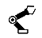
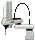
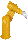

 Robotics Laboratories model elements
The Robotics Laboratories directory groups model elements devoted to help you design virtual and remote robotics laboratories in a simple way.
The elements available:
- Robots:
-  Scara robot from Omron, an articulated arm with four degrees of freedom (DOF).
-  TX60L robot from Stäubli, an industrial robot with six DOF.
- Other components:
More info about model elements in the Easy Java Simulations' Wiki.